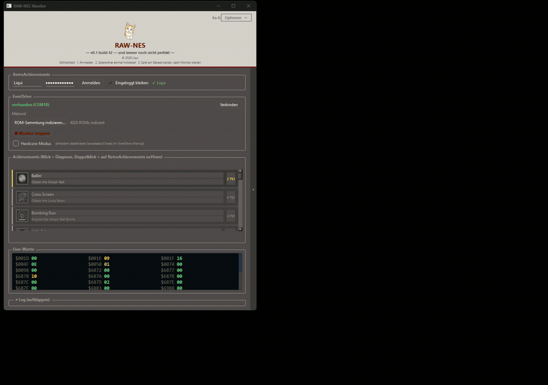

RetroAchievements on real NES hardware — no emulator, no ROM patch. A custom FPGA bus-snooper mirrors console RAM live so your original rom stays untouched.
RAW-NES connects your physical NES, an EverDrive N8 PRO, and RetroAchievements. Achievements trigger from the actual console state — the same 2KB of RAM your NES has always used.
A custom FPGA core inside the EverDrive N8 PRO watches the CPU bus directly and mirrors NES RAM into its own block RAM. Your PC reads that mirror live over USB and evaluates the achievement conditions there. Nothing is written to the running game and no code is injected — the cartridge behaves exactly as it would without RAW-NES.
Games run completely unmodified. Nothing is injected into cartridge memory.
The FPGA core mirrors the NES's internal RAM in real time as the CPU writes to it.
Available in the C++ port. RAW-NES verifies your setup before and during a session and only counts Hardcore when the conditions are actually met. If they are not, it tells you and switches to Softcore — no accidental Hardcore unlocks on a configuration that would not qualify. Leaderboards are enabled in Hardcore.
Two builds. The C++ port is the one to use: unpack it and double-click the executable. No Python, no dependencies, nothing to install.
Unpack, double-click, done. A native Windows executable with everything it needs alongside it. Achievement list with badges, unlock popup, leaderboard sidebar, live RAM view, English and German.
The original build. Needs a Python installation and its packages, and runs in Softcore only — Hardcore mode is exclusive to the C++ port. Still works and stays available, but new features go into the port.
Setup instructions and the full changelog are on GitHub.
Live values from the console, and an achievement unlocking as it happens.
